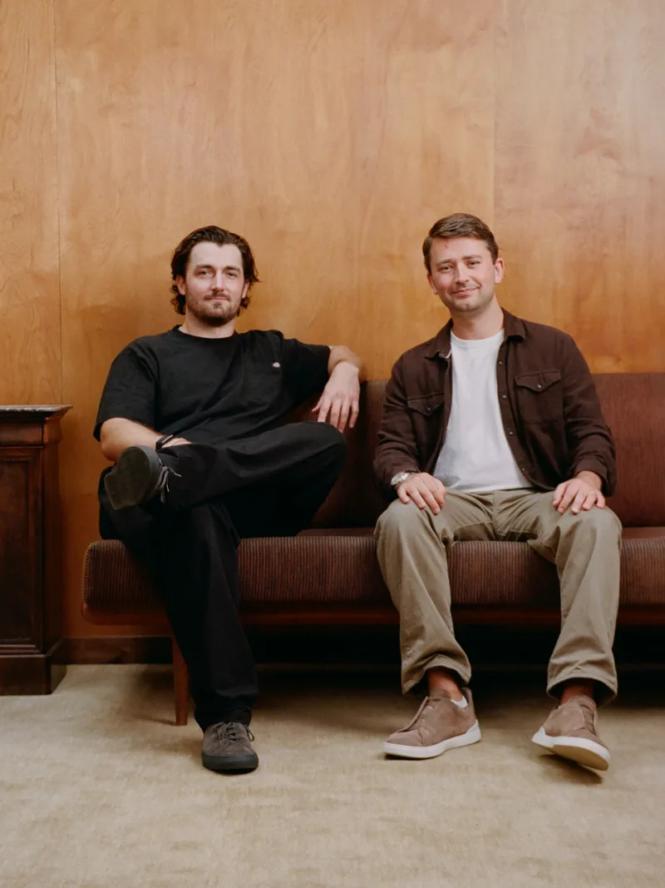
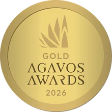

De Nada in the press.
Award-winning, additive-free tequila from NOM 1414, poured on CNN’s New Year’s Eve broadcast five years running.

- CNN
- The Tonight Show
- Forbes
- Robb Report
- VinePair
- The Spirits Business
- Beverage Industry
- Fox News Radio
Awards
What the judges and critics said.
Coverage
Newest first.The recycled glass bottle, the new Añejo, and a brand built on hospitality.
Read the article Robb ReportOctober 2026 The 11 Best Reposado Tequila Brands to Buy NowDe Nada Reposado, named the best reposado for cocktails.
Read the guide CNNNew Year’s Eve Live · December 2021 to 2025 The tequila on set with Anderson Cooper and Andy Cohen when the ball drops in Times Square.Five New Year’s Eve broadcasts and counting. Clips available on request.
Read about it The Spirits BusinessJune 2025 De Nada Tequila lands distribution dealThe national partnership with Luxury Spirits International.
Read the article The Spirits BusinessNovember 2024 Top 10 biggest brand glow-ups of 2024 Read the list The Daily PourOctober 2024 7 Best Tequila and Mezcals to Celebrate Day of the Dead 2024The Reposado makes the list.
Read the list ForbesAugust 2024 De Nada Tequila Introduces Innovative Sustainable PackagingOn the world’s first aluminum tequila bottle.
Read the article The Spirits BusinessAugust 2024 De Nada unveils first aluminium Tequila bottle Read the article VinePairApril 2022 93 points for the Blanco. Read the review The Tonight ShowNBC · 2022 Liam Neeson brings a bag of De Nada to Jimmy Fallon. Watch the clipListen
Danny and Adam, in their own words.- Fox News Radio: Happy HourCheers to De Nada Tequila. March 2025
- Fox News Radio: In Good SpiritsThe founders on friendship and building a tequila brand. March 2025
- Interview: Adam Millman and Danny NeesonA written Q&A with Adam Mendler
- People of PackagingEpisode 279: the aluminum tequila bottle
- The NOLADrinks ShowWith master distiller Cesar Vivanco. September 2022
- Questions and AlcoholWhere the name comes from, and why no additives
- The Cocktail Guru PodcastWith Danny Neeson
- Fermented AdventureWith Danny Neeson and Adam Millman
Milestones
From the first bottles to the third.- 2020The first bottles are filled at NOM 1414.
- 2021Door to door in New York, then distribution in New York and New Jersey.
- 2022Confirmed Additive Free, and available across the U.S. online.
- 2024The world’s first aluminum tequila bottle. New capital from sports team ownership.
- 2025Agavos Double Gold. A national partnership with Luxury Spirits International.
- 2026Recycled glass, the Añejo and the 1 L. Agavos Gold across all three.
Press kit
Use freely with coverage of De Nada.De Nada is a premium, single-estate, additive-free tequila made by the Vivanco family at NOM 1414 in Arandas, Jalisco, from estate-grown Blue Weber agave. Blanco, Reposado and Añejo, in premium recycled glass.
Danny Neeson, co-founder and president, started De Nada to honor his mother, Natasha Richardson, and her gift for making people feel at home.
Adam Millman, co-founder and CEO, leads the business and the brand. The two met at Tulane University in New Orleans.
Press and samples
Interviews, samples, photos or a bottle for a story. We usually reply the same day.